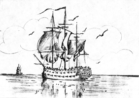
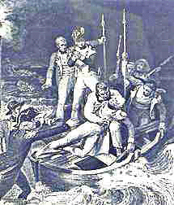

The First
HMS THESEUS

|
T |
he first ship in the Royal Navy to bear the name Theseus was laid down in the yard of Perry & Co, of Blackwall and completed in 1786. She was a 74-gun 3rd rate of 1680 tons, and on completion she was placed in ordinary reserve until the outbreak of war with France in 1793. She was commissioned by Captain Robert Calder, and joined the Channel Fleet early the next year.
Theseus served for a time in the English Channel, escorting convoys. On the last day of May she was ordered with her squadron to join Lord Howe, but was too late to take part in Howe’s victory over the French under Villaret Joyeuse in the battle of the Glorious First, of June 1794. For the rest of the summer Theseus carried out escort duties in the Channel and cruised in the Bay of Biscay in search of the French. In the autumn of that year she was ordered to reinforce the West Indies Fleet and spent the greater part of the following year escorting convoys in the Caribbean Sea. She returned to home waters in November 1795, and was engaged during the following year against the French.
In 1797 Captain Aylmer took over command of the ship and she joined the Mediterranean Fleet based on Lisbon and under the command of Admiral Sir John Jervis (afterwards Lord St Vincent) The Admiral, forming the opinion that Theseus was neither an efficient nor a happy ship, arranged for Rear-Admiral Horatio Nelson to hoist his flag in her in May; Captain R.W. Miller coming with Nelson as his Flag Captain.
The spirit and tone of the ship immediately improved and it is recorded that a note was picked up on the quarterdeck which read “Success attend Admiral Nelson! God bless Captain Miller! We thank them for the officers they have placed over us and will shed every drop of blood in our veins to support them”
Theseus had joined the Mediterranean Fleet too late to take part
in the battle of Cape St Vincent and she was chiefly employed in the blockade of
Cadiz where the Spanish Fleet had taken refuge. Following this, Nelson was given
command of a squadron consisting of Theseus (flagship), ‘Zealous’74,
‘Leander’50, three frigates, and a bomb and mortar cutter, and set out to
attempt the capture of a large treasure galleon which had taken refuge in Santa
Cruz de Tenerife, in the Canary Islands. An attempt by Nelson’s force to land on
20th July failed due to adverse winds and 
After heavy fighting, the Spaniards capitulated on the understanding that Tenerife would no longer be molested. Theseus and the remainder of the squadron returned to Lisbon where Nelson shifted his flag to the ‘Vanguard’ and entered the Mediterranean. In May of the following year Theseus sailed from Lisbon with a squadron under Commodore Troubridge, to re-enforce Nelson in the Mediterranean. The fleet spent some weeks searching for the French. The French Fleet was eventually sighted at anchor at Aboukir Bay, and on August 1st, 1798, was fought the Battle of the Nile. Theseus took a honourable part in the battle, which was an overwhelming victory for the British Fleet. The ship was severely damaged in the course of the fighting, but lost only six men killed and thirty-one wounded. On 14th August she sailed with several other vessels and the prizes, to join Lord St Vincent off Cadiz.
In February of the following year, 1799, Theseus was sent with Culloden 74 and two bombs to Alexandria, which was now occupied by the French under Napoleon Bonaparte, who was planning an expedition against the Turks, at this time in possession of all the Middle East. Commodore Sir Sidney Smith took over the command at Alexandria and his force, which consisted of Tigre 80. Theseus and Marianne 4, prepared to harass the French forces along the Palestine coast. Theseus was detailed and sent to assist the Turks at Acre, being followed shortly afterwards by Tigre.
They carried out delayed actions, which enabled the Turks to strengthen the defences of Acre. Bonaparte started to besiege the city on 20th March; after various attempts, he gave up and on 20th May withdrew, having suffered heavy losses.
On 14th May, an appalling accident occurred in Theseus. Some twenty 36-pdr, and fifty 18-pdr shells stacked on the quarterdeck blew up, killing Captain Miller, and killing or wounding 87 others of the crew. One historian puts this accident down to “a young midshipman, who amused himself by driving the fuses with a mallet and nail”. In Captain Miller, England lost one of Nelson’s ‘band of brothers’.
After Bonaparte’s set back The Turks assembled a force and landed at Aboukir. Theseus and Tigre covered the operation but were unable to prevent Bonaparte defeating the Turks very heavily on 17th June. Theseus remained in the Mediterranean under the command of Captain Stiles, until October 1800, at the end of which year she went to Chatham and underwent a refit for six months.
In June 1801, Theseus was re-commissioned by Captain John Bligh; she sailed in February 1802 for the West Indies station. Peace had been signed in 1801, but on the 16th May 1803, war was again declared and ‘Theseus was engaged in operations against the French Fleet and West Indies possessions, and later of the island of Curacoa, a Dutch colony adhering to the French. Towards the end of the year, Captain Hawker superseded Captain Bligh. In September the ship was nearly lost in the East Bahamas when she encountered a very fierce hurricane.
Towards the end of 1805 Theseus returned to Chatham to refit. In June 1806 she re-commissioned under Captain G. Hope and later in the year joined a squadron under Commodore Stopford, which was to be part of an expedition to take Buenos Aires. The expedition proved abortive, and Theseus returned to England from the Cape in June 1806. She now joined the Channel Fleet under the command of Captain Beresford, and was engaged in blockading the French coast. On one occasion she remained at sea for eight months without entering port. In February 1809, with Triumph and Valiant she drove the French into Basque Roads, later returning home. In July she joined the Scheldt expedition which attempted to capture Walcheron and Cadsand: she paid off at Chatham the following February and next month was re-commissioned by Captain Prowse and spent most of the rest of her active career blockading the Scheldt.
She was at Spithead early in 1813, and for a short time went to St Helena, later returning to the Scheldt: in December she paid-off and in May, 1814 she was broken up.